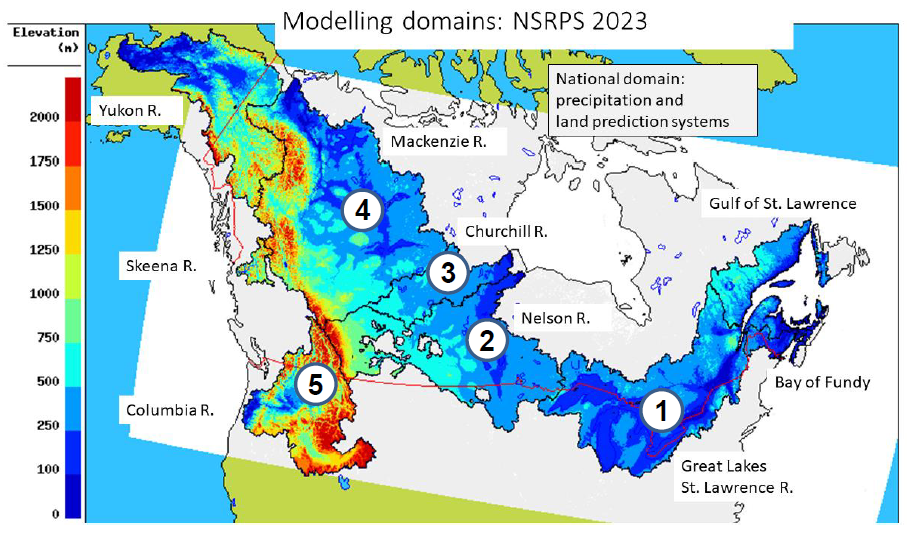

Glossary
Learn common terms used within this guide
NSRPS is a Complete hydro-meteorological prediction system, which aims to provide the best possible representation of the current and future states of the land surface, as well as the movement of water over and through the soil column and through the lake and river networks. NSRPS is an integrated chain of numerical prediction systems, driven by high-resolution atmospheric forcing fields from the High Resolution Deterministic Prediction System (HRDPS). The component systems of NSRPS include:
Current version: 3.1.0
Past versions:
Discharge outputs from NSPRS are currently implemented at a 1-km resolution over six major river basins representing ~50% of Canada. As NSRPS is composed of different sub-systems, both the domain and spatial resolution vary based on the which sub-system the output is derived. NSRPS is currently established in the following basins:

Currently data from sub-systems is only available through ECCC's internal Science Network.
click here for descriptions of various operational statuses
Technical note
Specifications
Change log
The End-User Licence for Environment and Climate Change Canada's Data Servers specifies the conditions of use of this data.
Learn common terms used within this guide
Discover tutorials and ways to use data
Learn how to access CMC products